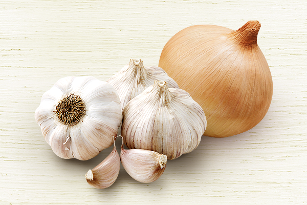

입냄새를 유발하는 음식
양치를 열심히 해도 입 냄새가 나는 찝찝한 느낌이 드는 경우가 많습니다. 입 냄새는 어떤 음식을 섭취하느냐에 따라 악화시키기도 하고 완화 효과를 볼 수도 있습니다.
커피와 술
입 안을 건조하게 만들어 타액 분비가 줄어들면서 입 속 박테리아가 번식하기에 유리한 환경이 조성됩니다. 과음할 경우 간에서 대사 작용을 제대로 하지 못해 혈중에 아세트산이 쌓여 입에서 쉰내가 날 수 있습니다.
설탕
설탕은 치아에 들러붙어 치석을 만들며 치석과 치아 사이에는 박테리아가 서식하기 때문에 되려 구취를 유발할 수 있습니다.
참치·생선 통조림
생선이 가진 특유의 냄새와 더불어 금속캔에 보관하는 과정에서 산화가 되기 때문에 발생할 수 있습니다.
마늘, 양파
마늘, 양파, 파, 아스파라거스, 겨자, 파슬리 등에도 황이 다량 함유되어 있습니다. 황 화합물은 입에 오래 머물 뿐 더러 혈액에 흡수되어 숨 쉴 때마다 냄새를 뿜어내기 때문이다.